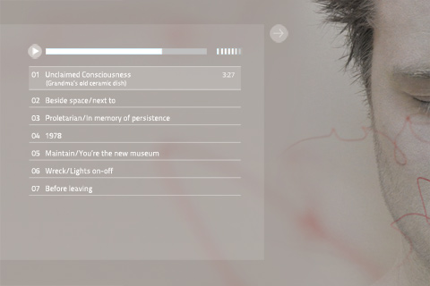

fonorum netalbum: detailsEN DE
Eine neuartige, persönliche und künstlerische Veröffentlichungsform von Musik im Internet!
Das Berliner Label fonorum hat ein eigenes Format für Veröffentlichung von Audiowerken entwickelt, das fonorum-netalbum.
Es ist die logische Weiterentwicklung eines haptischen Albums in Netzform, mit dem Versuch, so wenig wie möglich an liebgewordenen Merkmalen bisheriger Tonträger wie Konzept und Album der Schallplatte oder der CD zu verlieren.

Drei wesentliche Voraussetzungen für künstlerische Freiheit standen im Zentrum der Entwicklung : Raum, Persönlichkeit und Qualität.
- Raum: Ein Album pro Web-Link, nicht nur ein Eintrag in einem Katalog.
- Kunst und Individualität: Ein nicht veränderbares Präsentationsfeld, Art-Map genannt, auf der sich das Hör- und Sehbare ausbreiten kann.
- Qualität: Die Qualität ist mindestens so hoch wie bei der CD, keine Komprimierungskompromisse.
Technische Details:
Das Masteralbum steht online wie in einer Vitrine eines virtuellen Museums. Kopieen für den täglichen Gebrauch in entsprechender Gebrauchsqualität im Online-Shop.
Die Artmap dient nicht nur als vollständiger Ersatz eines Booklets, sondern erweitert die Ausdrucksmöglichkeiten. Dabei kann man sich eine Landkarte vorstellen, die man hin- und herschiebt und so auf Entdeckungsreise geht.
Eine Abfolge von Werken nach Wunsch des Künstlers, die Abfolge wird nicht durch praktische (Sortierung nach Genre etc), sondern durch künstlerischen Aspekten festgelegt.
Die künstlerische Qualität braucht auch ihr technisches Pendant, daher wird das Material in 16 oder sogar 24 Bit angeboten. Velusthafte Komprimierung wie mp3 ist eine Notlösung aus den Anfängen des Internets und kann durch höhere Bandbreite mehr und mehr verschwinden.
Das fonorum netalbum basiert auf dem HTML 5 Standard und verzichtet weitgehend auf proprietärer Software. Flash sucht man beispielsweise vergebens.